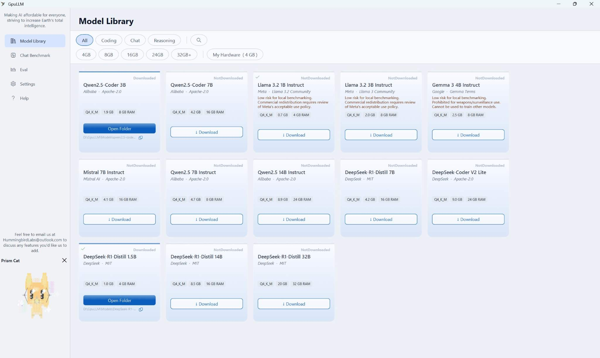
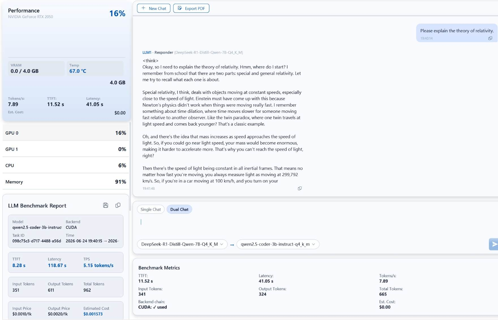
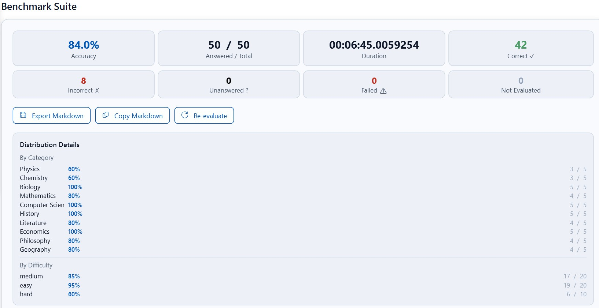
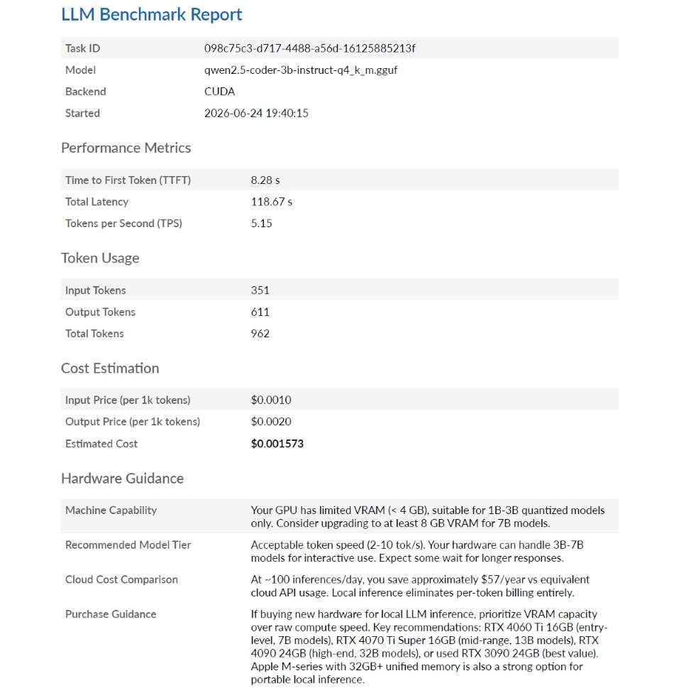

GpuLLM adalah aplikasi Windows gratis yang memungkinkan Anda mengevaluasi LLM lokal secara komprehensif — mengukur kecepatan inferensi (token/detik, latensi) dan kemampuan model (akurasi MMLU, C-Eval). Semuanya 100% offline — chat, benchmark, monitoring GPU, manajemen model — hanya pengunduhan model yang memerlukan internet. Temukan kecocokan model-dengan-hardware ideal Anda dalam hitungan menit. Tanpa ketergantungan cloud, tanpa kunci API, data Anda tidak pernah meninggalkan mesin Anda.
Gratis — tanpa langganan. HummingbirdLabs@outlook.com
Antarmuka modern yang lancar membuat inferensi LLM lokal dan monitoring GPU menjadi mudah.




GpuLLM adalah suite Windows gratis terlengkap untuk evaluasi LLM lokal. Berikut semua yang Anda dapatkan — tanpa langganan, tanpa paywall.
Jalankan model bahasa besar format GGUF langsung di GPU Anda menggunakan LLamaSharp dengan backend llama.cpp. Mendukung CUDA, Vulkan, dan fallback CPU.
Selain katalog terkurasi, impor model GGUF apa pun dari disk lokal Anda. Arahkan GpuLLM ke file GGUF Anda dan mulai mengobrol dengan model khusus atau komunitas.
Pantau utilisasi GPU, penggunaan VRAM, suhu, dan konsumsi daya secara real-time. Termasuk grafik sparkline 60 detik dan dukungan multi-GPU.
Ngobrol dengan model apa pun dan ukur kecepatan token GPU Anda (token/detik), TTFT, dan latensi total. Estimator biaya bawaan membandingkan inferensi lokal dengan harga API cloud.
Jelajahi 13 model terkurasi termasuk Qwen2.5-Coder, DeepSeek-R1, Llama 3.2, Gemma 3, dan Mistral. Filter berdasarkan kategori dan periksa kompatibilitas VRAM.
Unduh model langsung dari HuggingFace Hub atau ModelScope. Mendukung unduhan yang dapat dilanjutkan dengan verifikasi SHA-256.
Pola interaksi baru — tetapkan dua peran LLM dalam satu chat: Penjawab yang menjawab pertanyaan, dan Peninjau yang mengevaluasi dan meningkatkan jawaban secara kritis.
Prism Cat — maskot animasi langsung yang merespons tingkat utilisasi GPU Anda. Lihat perubahan emosi dan warna kucing secara real-time saat beban inferensi meningkat.
Benchmark model Anda terhadap set soal komprehensif: 100 soal bahasa Inggris (MMLU) dan 100 soal bahasa Mandarin (C-Eval), mencakup 10+ dimensi termasuk Matematika, Fisika, Kimia, Biologi, Ilmu Komputer, Sejarah, Sastra, Ekonomi, Filsafat, dan Geografi.
Setiap inferensi menghasilkan laporan detail dengan rantai backend, metrik puncak GPU, dan statistik level token. Ekspor percakapan dan laporan lengkap sebagai PDF A4.
Sementara alat lain hanya menjalankan model, GpuLLM memberi Anda gambaran lengkap — kecepatan, akurasi, dan biaya — dalam satu paket gratis.
Kebanyakan alternatif hanya memungkinkan chat dengan model tetapi tidak mengukur performa, mengevaluasi akurasi, atau melacak metrik GPU. Anda dibiarkan menebak model mana yang terbaik di hardware Anda — dan apakah Anda benar-benar menghemat uang dibandingkan API cloud.
Setiap entri mencakup repo HuggingFace, kuantisasi, dan ukuran file yang benar — unduh dengan sekali klik.
| Nama Tampilan | Pembuat | Kategori | Ukuran | VRAM |
|---|---|---|---|---|
| Qwen2.5-Coder 3B | Alibaba | Coding | 1,9 GB | 8 GB |
| Qwen2.5-Coder 7B | Alibaba | Coding | 4,2 GB | 16 GB |
| DeepSeek-Coder V2 Lite | DeepSeek | Coding | 9,0 GB | 24 GB |
| Llama 3.2 1B Instruct | Meta | Chat | 0,7 GB | 4 GB |
| Llama 3.2 3B Instruct | Meta | Chat | 2,0 GB | 8 GB |
| Gemma 3 4B Instruct | Chat | 2,5 GB | 8 GB | |
| Mistral 7B Instruct | Mistral AI | Chat | 4,1 GB | 16 GB |
| Qwen2.5 7B Instruct | Alibaba | Chat | 4,7 GB | 8 GB |
| Qwen2.5 14B Instruct | Alibaba | Chat | 8,9 GB | 24 GB |
| DeepSeek-R1-Distill 1.5B | DeepSeek | Reasoning | 1,0 GB | 4 GB |
| DeepSeek-R1-Distill 7B | DeepSeek | Reasoning | 4,2 GB | 16 GB |
| DeepSeek-R1-Distill 14B | DeepSeek | Reasoning | 8,5 GB | 16 GB |
| DeepSeek-R1-Distill 32B | DeepSeek | Reasoning | 20 GB | 32 GB |
Setiap fitur — chat, benchmark, evaluasi, monitoring GPU, pelaporan — berjalan sepenuhnya di mesin Anda. Satu-satunya hal yang memerlukan internet adalah mengunduh model. Tanpa telemetri, tanpa akun, tanpa kunci API, tanpa pengumpulan data. Selamanya.
Mesin inferensi C++ performa tinggi dengan binding .NET terkelola — backend yang sama yang mendukung aplikasi AI lokal di seluruh dunia.
UI desktop Windows modern dengan komponen Fluent Design System. Dukungan tema gelap/terang dengan efek material kaca dan animasi halus.
Rantai fallback otomatis CUDA 12 → Vulkan → CPU. Aplikasi mendeteksi hardware yang tersedia dan memilih backend tercepat.
Semua inferensi model, pemrosesan data, dan operasi file terjadi secara eksklusif di perangkat lokal Anda. Tanpa telemetri, tanpa ketergantungan cloud.